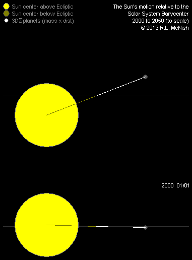
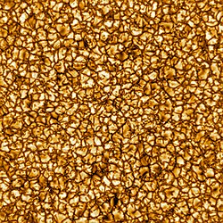
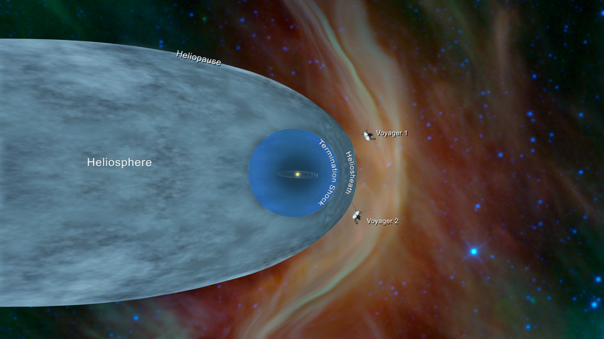
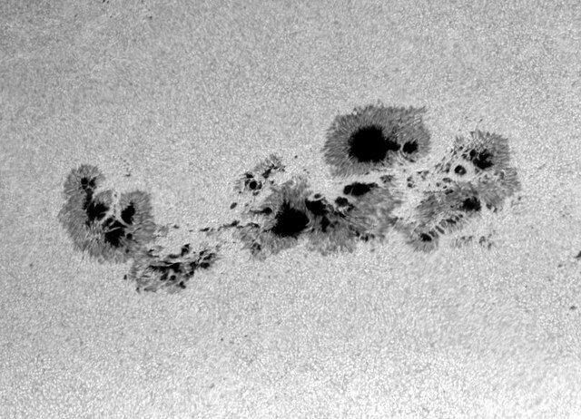

The Sun is a G-type star. Source
The Sun is the star of the Solar System.
It is a G-type yellow dwarf and has 8 known planets orbiting around it.
The Sun is 4.5 billion years old and is expected to last 5 billion more years as a main sequence star, before it becomes a red giant.
The Sun has a strong magnetic field that can create sunspots and solar flares.
It also creates solar winds of charged particles, sending them up to several hundred astronomical units.
One unexplained anomaly is the corona - the outernmost layer of the solar atmosphere - which has a much greater temperature than the surface.
The Sun is vital for life on Earth and has been seen as a deity.
Solar calendars are based on the Earth's rotation around the Sun.
At the center of the solar nebula that formed the Solar System 4,6 billion years ago, gravity pulled more and more material together into a protostar that would become the Sun.
With time, the protostar Sun achieved hydrostatic equilibrium and began thermonuclear fusion, becoming a main-sequence star.
In 5 billion years, the Sun will enter its red giant phase after turning all of its hydrogen into helium.
It will destroy Mercury, Venus, and possibly Earth, and the habitable zone will move all the way to the orbit of Jupiter.
Eventually it will use up all of the helium and won't be able to commense the fusion of heavier elements and will send its outer layer into space forming a planetary nebula and leaving a dense white dwarf.

Movement of the Sun around the Solar System barycenter. Source
Rotation and movement
The Sun rotates faster at its equator than at its poles.
Relative to the stars, the rotational period is approximately 25.6 days at the equator and 33.5 days at the poles.
Early in its history, the Sun most likely rotated ten times faster than today.
The Sun is moved by the gravitational pull of the planets, mainly Jupiter, Saturn, Uranus, and Neptune.
The center of the Sun moves around the Solar System barycentre, within a range from 0.1 to 2.2 solar radii.
The Sun's motion around the barycentre resembles a trefoil and repeats approximately every 179 years, rotated by about 30° due primarily to the synodic period of Jupiter and Saturn.
The Sun has a diameter of 1,391,400 km, or 109 times that of Earth.

High resolution image of the convection cells (granules) of the photosphere. Source
The Sun is composed of 74.9% hydrogen and 23.8% helium.
The remaining elements account for less than 2%, the most abundant of which are oxygen, carbon, neon, and iron.
The helium in the core has increased from 24% to 60% since its formation.
The Sun is a Population I (metal-rich) star, meaning it has been enriched with heavy elements by supernovae.
The core is the region where nuclear fusion occurs, fusing hydrogen into helium.
It extends about 20–25% of the Sun’s radius.
Its temperature reaches 15 million K and has a density of 150 g/cm^3.
The proton-proton fusion creates alpha particles, or helium cores, and emits positrons, gamma rays and neutrinos.
The radiative zone surrounds the core, extending to about 70% of the Sun’s radius.
Temperature there drops from 7 million to 2 million K.
Energy moves outwards via thermal and radiative conduction.
Separated by a transitional layer, known as tachocline, the convective zone is the outernmost 30% of the Sun’s radius.
The temperature there is 2 million K at the base and 5,700 K at the surface.
In contrast to the radiative zone, energy here is transported through convection; hot plasma rises, cools as it nears the surface, then sinks back down.
Around the Sun is its atmosphere, separated into a photosphere, a chromosphere, and a corona.
Temperature rises progressively up to 1-2 million K on average.
The photosphere is the thick layer which emits light.
It is 500 km thick and is covered with granular convective cells known as granules.
Within the next 2,000 km of the chromospheres, spicules and fillaments (prominences) appear.
This layer is usually inisible to the naked eye but can be seen as a red glow during solar eclipses.
The corona extends for millions of kilometers outside the chromosphere and can be easily seen during solar eclipses.
It is the hottest part of the atmosphere and can exceed the 2 million K average, sometimes up to 8 - 10 million K.
Although no complete theory exists to account for this anomaly, at least some of its heat is known to be from magnetic reconnection.
Surrounding the atmosphere is the heliosphere.
This region is where solar winds dominate over the interstellar medium.
The solar winds are made up of charged particles released from the corona, moving at supersonic speed until they reach a termination shock 75-90 Au from the Sun.
The boundary between the two is called the heliopause.
Voyager 1 is the first artificial object known to pass the heliopause at 121 AU when it detected a sharp increase in cosmic ray collisions.
Since the Sun moves through the galaxy, the heliosphere has a tail several thousand AU in length.

Extend of the heliosphere and termination shock, both passed by the two Voyager probes. Courtesy NASA/JPL-Caltech

A large group of sunspots. Source
The Sun’s magnetic field is generated by the movement of electrically conductive plasma in its convective zone and the tachocline.
Number of manifestations are the result of the magnetic field.
For one, sunspots are dark, cooler regions on the photosphere, caused by intense magnetic fields inhibiting heat flow.
Their number and size follow an ~11-year solar cycle.
Another feature resulting from this activity are solar flares, which are sudden, powerful bursts of energy in the form of X-rays, UV, and radio waves.
Coronal mass ejections are similar to solar flares, but instead are made up of plasma.
Because it is the brightest object in the sky, the Sun has been observed by humans before written history.
Heliocentrism originated in Ancient Greece and was later formulated mathematically by Nicolaus Copernicus in the 16th century.
The first detailed observations of sunspots were made by Chinese astronomers as early as 800 BCE.
In the 17th century, Galileo Galilei and Thomas Harriot independently used telescopes to study sunspots.
By the 19th century, astronomers like Samuel Heinrich Schwabe discovered the Sun’s approximately 11-year activity cycle, linking sunspot numbers to solar magnetic activity.
The invention of spectroscopy in the 1800s revolutionized solar science, allowing scientists to analyze the Sun’s light and identify its chemical composition.
In 1868, Pierre Janssen and Norman Lockyer discovered helium (from Greek "ἥλιος" - Sun) in the Sun’s spectrum before it was found on Earth.
The early 20th century saw the development of solar observatories and the use of photography to document solar phenomena, such as prominences and solar flares.
The first satellites designed for solar observations were NASA's Pioneer 6 - 9 probes, launched in heliocentric orbits between 1959 and 1968.
They made the first detailed measurements of the solar wind and the solar magnetic field.
NASA’s Orbiting Solar Observatory (OSO) series, launched in the 1960s and 1970s, provided the first detailed ultraviolet and X-ray images of the Sun, revealing the dynamic nature of its corona and solar flares.
Later, two Helios spacecraft and the Skylab Apollo Telescope Mount provided scientists with significant new data on solar wind and the solar corona.
NASA's Solar Maximum Mission (1980–1989) and JAXA's Yohkoh (1991–2001) satellites further captured high-energy events and coronal mass ejections (CMEs).
NASA and ESA launched the Ulysses probe in 1990 to study the Sun's polar regions.
It first travelled to Jupiter to adjust into a highly inclined orbit, after which it observed the solar wind and magnetic field strength at high solar latitudes.
In the 21st century, NASA's Genesis was designed to allow astronomers to directly measure the composition of solar material by returning solar wind samples.
NASA’s Solar Dynamics Observatory (2010–present) has delivered unprecedented views of the Sun’s surface, atmosphere, and magnetic field.
SDO’s high-resolution imagery and continuous monitoring have helped scientists track solar storms and predict space weather.
NASA's Parker Solar Probe (2018–present), has flown through the corona, sampling particles and magnetic fields.
To date it is the probe that reached the shortest distance to the Sun and the greatest speed.
External links
{kind=link}
{kind=link}
_as_of_January_20,_2020.jpg){kind=link}